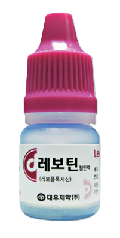
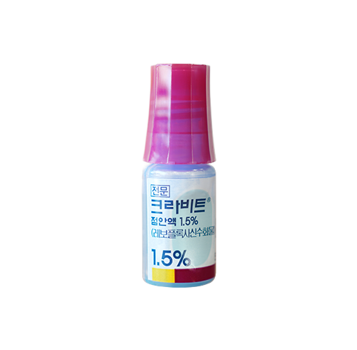
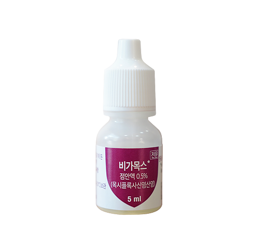
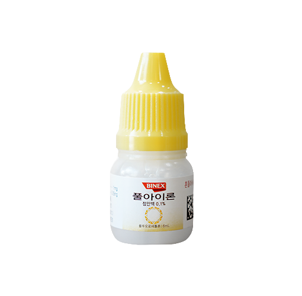
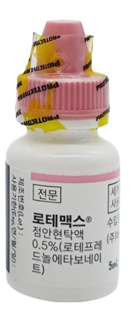
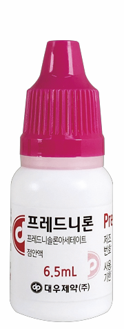
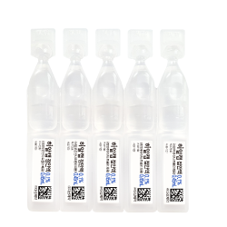
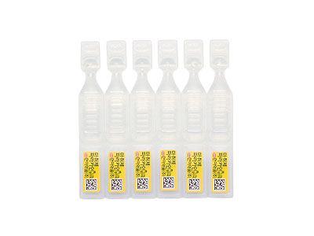

YONSEI JEIL EYE CLINIC GUIDE
시력교정수술
수술 방법
스마일
상세 안내는 준비 중입니다.
라식
상세 안내는 준비 중입니다.
라섹
상세 안내는 준비 중입니다.
렌즈삽입술
상세 안내는 준비 중입니다.
연세제일안과 시력교정수술 종류
스마일
상세 안내는 준비 중입니다.
커스텀 라식
상세 안내는 준비 중입니다.
컨투라 라섹
상세 안내는 준비 중입니다.
퍼스널아이즈 라섹
상세 안내는 준비 중입니다.
올레이져 라섹
상세 안내는 준비 중입니다.
렌즈삽입술
상세 안내는 준비 중입니다.
검사/수술 전
시력교정 검사/수술 전 안내사항
수술을 계획하기 전에!
- 임신 중이거나 임신 계획 중이신 분들은 전후 3개월이 지난 후에, 수유 중인 분들은 수유가 끝난 후 검사와 수술을 계획하시는 것이 좋습니다.
- 안질환이 있는 경우 검사 진행이 불가합니다.
검사/수술 전 준비사항
내원 전
렌즈 착용 중단
렌즈를 사용하고 계시다면 착용을 중단해 주세요. 중단 시작일은 검사/수술일을 포함해 거꾸로 계산해 주세요. 미착용 기간을 지키지 않으면 일정이 변경될 수 있습니다.
| 소프트렌즈 | 7일 이상 미착용 |
|---|---|
| 난시용 렌즈 | 10일 이상 미착용 |
| 하드렌즈 | 10일 이상 미착용 |
| 드림렌즈 | 최소 1개월 이상 미착용 |
검사/수술 당일
눈화장은 피해주세요.
정확한 검사와 안전한 수술을 위해 눈화장 없이내원해 주세요. 화장을 하셨다면 클렌징을 할 수 있는 세안실이 준비되어 있습니다. (3층)
대중교통 이용 또는 보호자 동반 내원 (본인 운전 X)
망막·시신경 상태 확인과 정확한 도수 측정을 위해 동공 확대 안약을 눈에 넣는 산동검사를 합니다.
동공 확대 안약이 체내에서 빠지는 3~4시간 정도 근거리 작업(독서, 컴퓨터 작업, 핸드폰 사용 등)이 불편하실 수 있으며, 눈부심이 있을 수 있어 선글라스나 모자를 챙겨오시면 좋습니다.
검사/수술 당일은 자가운전이 어려우므로 가급적 대중교통을 이용하시거나 보호자를 동반하여 내원해 주시기 바랍니다.
신분증 필수 지참
2024년 5월부터 병·의원 본인 확인 의무화에 따라 주민등록증, 운전면허증, 여권 중 하나를 꼭 지참해 주세요.
검사 안내
시력교정수술을 위한 기초검사
소요시간 약 2~3시간
각막이상증 유전자 검사
아벨리노 각막이상증 외 4종(전문 검사 기관 의뢰)
수술 확정 시 검사 진행됩니다.
병원 이용 안내
일정 변경 시
예약 변경은 최소 하루 전에 병원으로 꼭 연락 주세요.
시력교정수술센터064-727-2703층 안내
시력교정수술센터 3층으로 내원해 주세요.
수술 후
라식 / 스마일 수술 후
수술 후 증상
- 수술 당일은 통증, 시린 느낌과 눈물, 이물감이 있을 수 있습니다.
- 양쪽 눈의 느낌과 회복 속도가 다른 것은 정상입니다.
주의사항
- 눈을 비비거나 힘을 주어 세게 감지 않도록 주의해 주시고 눈을 부딪히지 않도록 해주세요.
- 충격의 위험이 있는 심한 운동(헬스, 수영, 등산 등)은 한 달 후부터 가능합니다.
- 치료용 렌즈를 넣어드린 경우, 수술 다음날 제거하며 눈이 건조하거나 세게 감을 경우 렌즈가 빠질 수 있으므로 인공 눈물을 자주 넣어주세요.
- 다음날부터는 비누 세안이 가능합니다. 단, 비눗물이 들어가지 않게 조심하시고 눈두덩이 부분을 세게 비비지 마십시오.
- 수면 시간은 6~7시간을 권장합니다.
약 사용법
모든 약은 반드시 처방전이 있어야 구입 가능합니다. 먹는 약은 1일~3일치이며 식후 30분 후 복용합니다.
모든 안약은 1방울씩만 사용하시고, 약물의 충분한 흡수를 위해 최소 5분 간격을 두고 점안해 주세요.
항생제
안내된 안약 중 본인에게 처방된 안약만 사용합니다.



수술 당일부터 매일 사용
처방에 따라 2시간마다 또는 하루 4번(아침/점심/저녁/자기 전)
소염제 스테로이드
안내된 안약 중 본인에게 처방된 안약만 사용합니다.



수술 당일부터 매일 사용 · 흔들어서 사용
처방에 따라 2시간마다 또는 하루 4번(아침/점심/저녁/자기 전)
인공눈물

수시 점안
건조해지지 않도록 수시로 점안하세요. 개봉 후에는 24시간 이내로 사용하세요.
라섹 수술 후
수술 후 증상
- 2~3일 정도 심한 통증, 시린 느낌과 눈물, 이물감이 있을 수 있습니다.
- 양쪽 눈의 느낌과 회복 속도가 다른 것은 정상입니다.
주의사항
- 일상생활은 3일 이후부터 가능하며 가급적 수술 후 3일까지는 외출을 삼가 주십시오.
- 수술 시 넣어드리는 각막 보호용 렌즈는 눈이 건조하거나 세게 감을 경우, 혹은 눈을 강제로 벌리고 안약을 넣을 경우 빠질 수 있으므로 인공 눈물을 자주 넣어주시고, 눈을 살짝 감고 계시는 것이 좋습니다. 보호렌즈 교체 시 소모품 비용이 발생될 수 있습니다.
- 렌즈가 빠진 것이 의심되는 경우에는 가급적 바로 내원해 주시거나, 저녁에 빠져서 내원이 어려우신 경우에는 인공눈물을 자주 넣으시고 반드시 방문해 주시기 바랍니다.
- 수술 당일은 물 세안, 1~3일 후 비누 세안이 가능합니다. 단, 비눗물이 들어가지 않게 조심하시고 눈두덩이 부분을 세게 비비지 마십시오.
- 수면 시간은 6~7시간을 권장합니다.
약 사용법
모든 약은 반드시 처방전이 있어야 구입 가능합니다. 먹는 약은 1일~3일치이며 식후 30분 후 복용합니다.
모든 안약은 1방울씩만 사용하시고, 약물의 충분한 흡수를 위해 최소 5분 간격을 두고 점안해 주세요.
항생제
안내된 안약 중 본인에게 처방된 안약만 사용합니다.
수술 당일부터 매일 사용
하루 4번(아침/점심/저녁/자기 전)
소염제 스테로이드
안내된 안약 중 본인에게 처방된 안약만 사용합니다.
수술 당일부터 매일 사용 · 흔들어서 사용
하루 4번(아침/점심/저녁/자기 전)
진통 안약

참기 힘든 통증이 있을 때에만 넣으세요. 가급적 넣지 마세요.
인공눈물
수시 점안
건조해지지 않도록 수시로 점안하세요. 개봉 후에는 24시간 이내로 사용하세요.
수술 후 진료일정
수술 후 첫 진료 안내
연세제일안과는 시력교정수술을 위한 장비를 갖추고, 검사 결과에 따라 적합한 수술을 제공합니다.
수술 후 첫 진료 전까지 눈이 시리거나 일상생활이 잠시 불편할 수 있습니다.
| 수술 종류 | 첫 진료일 |
|---|---|
| 렌즈삽입술 | 수술 다음날 |
| 스마일 / 라식 수술 | 수술 다음날 |
| 라섹 수술 | 수술 3~4일 뒤 |
첫 진료 후 다음 진료일정은 의료진과 상담 후 정해집니다. 정해진 일정이 아니더라도 불편한 상황이 생길 경우 언제든 내원 바랍니다.
수술 후의 일상
수술 종류와 회복 상태에 따라 활동 가능 시기가 다를 수 있으므로 담당 의료진의 안내를 따라주세요.
건조한 환경 유의
- 눈을 많이 건조하게 하는 환경, 예를 들어 PC방, 고깃집, 호프집, 노래방, 당구장, 클럽, 카페처럼 공기가 탁하고 연기가 많은 곳, 담배 연기에 노출되기 쉬운 곳, 냉·난방이 센 곳 등은 가급적 피하시는 것이 좋습니다. 냉난방기 바람을 직접 눈에 쐬면 건조해지기 쉬우므로 주의하셔야 합니다.
- 흡연 역시 눈을 건조하게 하므로 수술 직후에는 되도록 피하시는 게 좋습니다.
세안
- 당일 샤워는 눈에 물이 들어가지 않도록 목 아래로만 조심히 씻어주세요.
- 수술 1~3일 후 샴푸 가능, 사우나(대중목욕탕)는 4주 후부터 가능합니다.
펌·염색
- 수술 2주 후부터 가능합니다.
음주
- 수술 2주 후부터 가벼운 음주는 가능하나, 가급적 한 달 이후가 좋습니다.
운동
- 수술 다음날부터 가벼운 운동은 가능하며, 충격이 가해지는 운동은 한 달 후부터 가능합니다.
- 수영은 한 달 후부터 가능합니다.
화장
- 1~2일 후부터 피부화장, 1~2주 후부터 눈 화장 가능합니다.